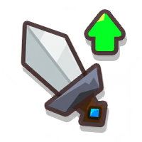
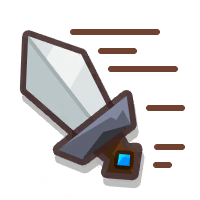

Indy
Indy is a Support Mythic that can be summoned with a Sheriff, Wolf Warrior, and a Sandman.
His ult Fortune & Glory allows him to look for a treasure hidden somewhere on the map. These treasures vary in purpose, rarity, and strength. Almost all of them, however, provide a beneficial buff in game.
From level 6, the treasure location will be briefly revealed once the mana bar fills. You may select Indy to reveal the location again.
From level 12, the newest treasure found will not be below the currently held tier. For example, if your Indy holds a legendary treasure, it cannot then find a rare treasure since legendary is better than rare. You may, however, find the same treasure but at a lower value within the legendary range.
For more information on the rarities, ranges, and what each treasure does, see below:
| Treasure | Rarity/Effects |
|---|---|
| Useless Skull |
|
| No effect | |
| No effect | |
| No effect | |
| Old Shield |
|
| 1-20: DEF Reduction | |
| 22-40: DEF Reduction | |
| 43-85: DEF Reduction | |
| Strong Sword  | |
| 1%-15%: ATK Damage | |
| 16%-25%: ATK Damage | |
| 26%-40%: ATK Damage | |
| Quick Sword  | |
| 1%-15%: ATK Speed | |
| 16%-25%: ATK Speed | |
| 26%-40%: ATK Speed | |
| Energy Drink | |
| 1%–20%: MP Regen | |
| 22%–40%: MP Regen | |
| 43% – 85%: MP Regen | |
| Lucky Gem | |
| - | |
| +2: Luck Stone per wave | |
| +3: Luck Stone per wave | |
| Coin Pocket | |
| - | |
| - | |
| +100 – +240: Coins per wave | |
| Cheap Toy | |
| 10/15/20/25/30%: ATK Damage | |
| 10/15/20/25/30%: ATK Speed | |
| 10/15/20/25/30%: ATK MP Regen |